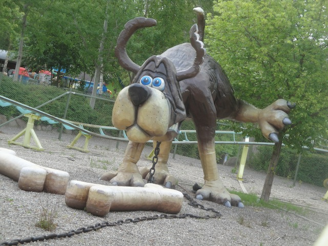
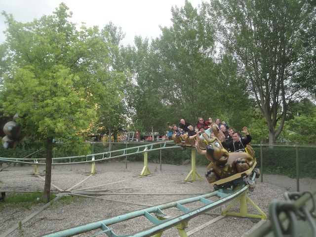
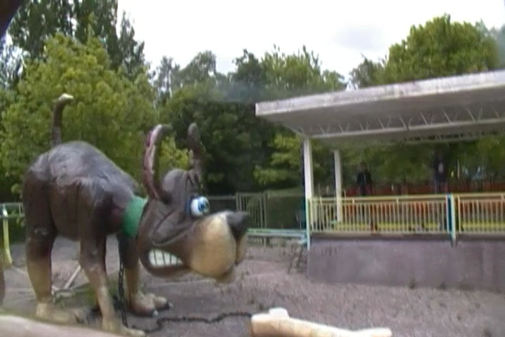
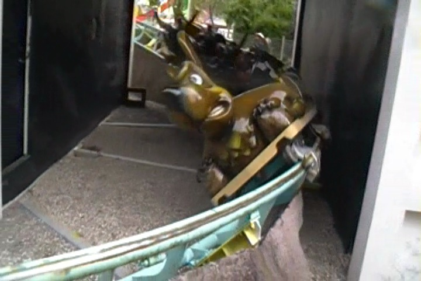
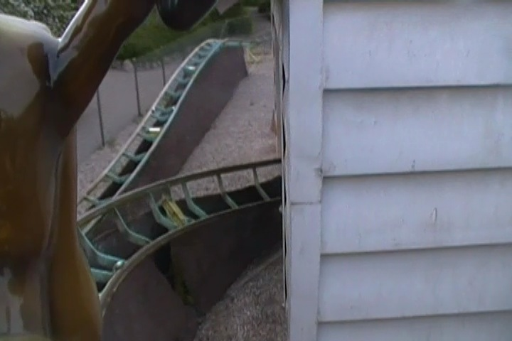
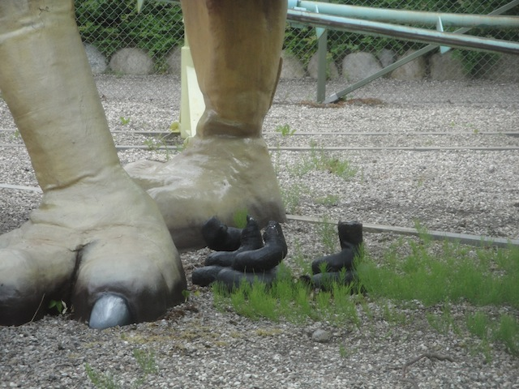
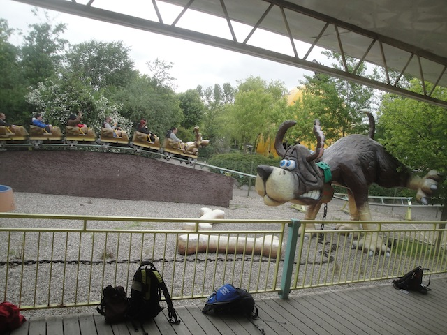
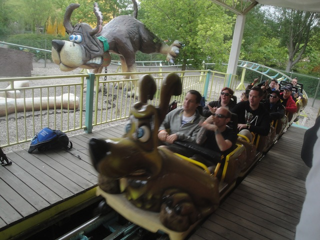
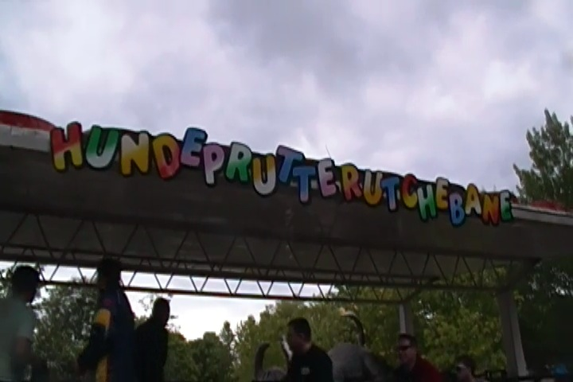

| |
Hundeprutterutchebane (Dog Fart Coaster) Review

We're here at Bon Bon Land. And while this may be a kiddy coaster, it is also just about one of the strangest and most f*ked up coasters in the world. The Dog Fart Coaster. Yes. This is a roller coaster literally themed to a dog farting, and then taking a dump on the ground. You're riding a ride about a dog farting! How exciting! What are we waiting for!!! You climb into the cars, and pull down the lap bar. And we're off!!! We start to climb the lifthill. But before we know it, we are rolling through this downward helix that's acting as our first drop. So far, just a kiddy coaster. But then we go through this dog house. Just seems like good theming. But inside the dog house. We hear something. It's Henry Hundeprut. And of course, he's farting. He's farting right on us! YAY!!! We're getting farted on!!! BEST THEMING EVER!!! =) We then rise up a little bit and go through a little turn. We then go through some tiny bumps and look to your right. And who's that we see? Yes. It's Henry Hundeprut. And whoa! What's this!! What's that on the ground Henry Hundeprut? Tsk tsk. That was NOT a fart Henry. That's a solid peice of sh*t right there. You just took a sh*t on the ground. We then go through another turn before heading back in the station. So yeah. We just rode a ride that's all about a dog pooping. And that's the whole reason it's so fun. Yes, it's immature. Yes, we shouldn't be so excited by this. But...IT'S A DOG FART COASTER!!! Not many rides are like this. THIS IS NOT CREDIT WHORING!!! I know the clones of this ride suck. But if you're at Bon Bon Land, you have to ride the Dog Fart Coaster. It's just...too wacky to ignore!! =D
5/10
Location: Bon Bon Land
Opened: 1993
Built by: Zeirer
Last Ridden: June 16, 2014
I have ridden this exact same ride at the following parks
(These are not Dog Fart Coasters, and therefor, lame).
Heide Park
Nascar Speedpark
Hundeprutterutchebane (Dog Fart Coaster) Photos









Home
|